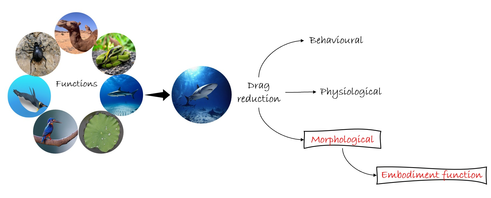
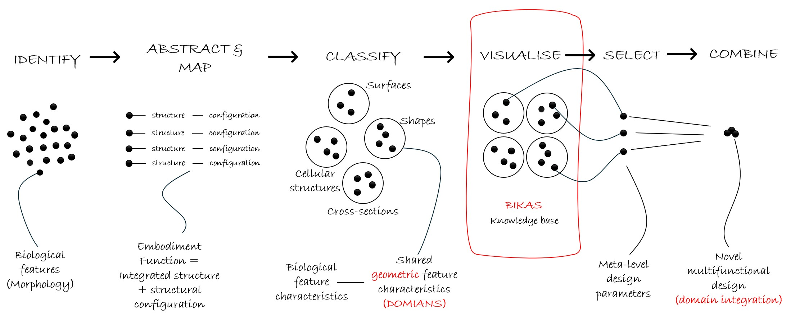
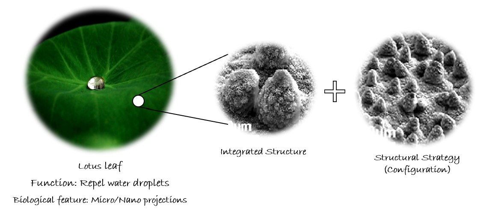
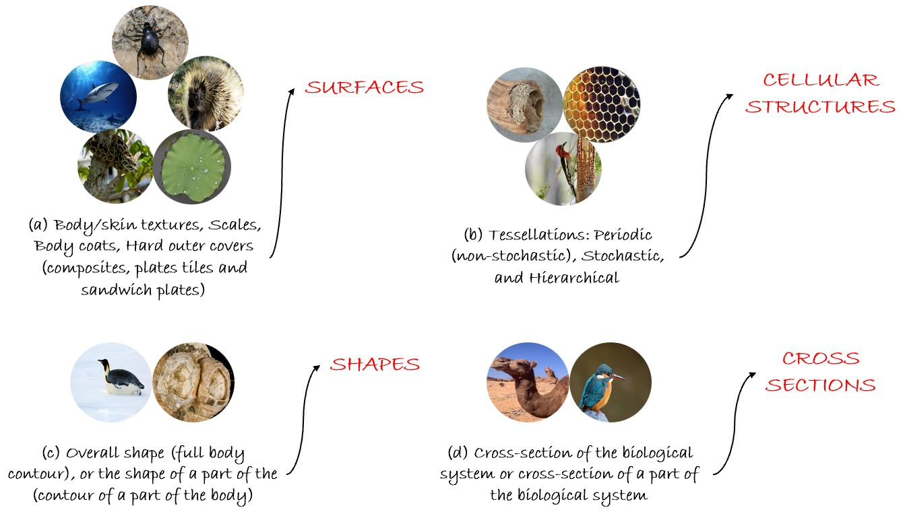
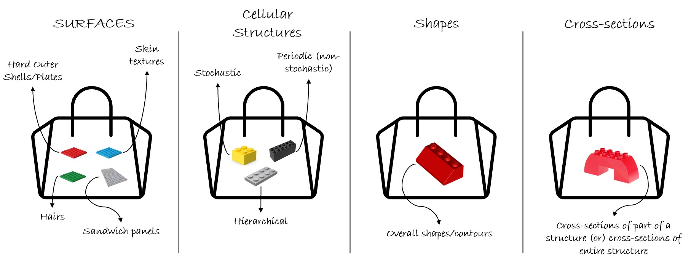

MBID facilitates the combination of biological features from different functional and structural domains to create multifunctional designs. The system uses tree dendrograms to guide the exploration and integration of features, helping designers generate structurally coherent and functionally innovative concepts.
Biological organisms achieve a vast array of functions through a combination of their morphology (structure), physiology (how they work), and behavior as depicted in Figure 3. The MBID approach, however, specifically focuses on functions derived from morphological features. We call these embodiment functions.
Nature often provides elegant solutions. Distantly related organisms, despite their evolutionary paths, frequently develop similar structural designs to perform identical functions. MBID uses this principle to explore the extensive morphological diversity found across both plant and animal kingdoms. This broad exploration significantly expands the potential design solutions for various engineering challenges.
The MBID Ideation System is built upon several key components. Figure 4 is an illustration describing the key components starting from identification, abstraction & mapping, function-structrue relationship, classification, visualisation, selection and combination.
Identifying the organisms exhibiting various functions through their morphological features by drawing information from published articles and case studies in scientific literature.
Each biological (morphological) feature is meticulously mapped to its corresponding function and the tissue (material) from which it originates. Furthermore, the embodiment function achieved by a feature is understood as a blend of its integrated structure and its structural strategy (configuration).
The embodiment function is a synergistic outcome of an integrated structure and its structural strategy. Figure 5 is a schematic illustrating the embodiment function of a lotus leaf in repelling water. This function results from a combination of micro/nano projections (integrated structure) on the leaf's surface and the arrangement of these micro/nano structures (structural strategy).
Integrated structure refers to the physical description of a multiscale structure. This includes details like micro/nanostructure, macrostructure, and even the presence of features like wax layers.
Structural strategy defines the integrated structural configuration. This encompasses aspects such as the arrangement, packing, or orientation of micro/nanostructures, symmetry, asymmetry, or tessellation patterns. It also accounts for changes in structural configuration due to external stimuli, such as the erection of scales or a change in skin compliance, which occur when other elements interact with the structure. Table 1 is an example of the lotus leaf's morphology contributing to its exhibited repel water function.
| Biological Feature | Embodiment Function | Integrated Structure | Structrual Configuraiton |
|---|---|---|---|
| Micro/Nano projections (Lotus leaf). | Repel Water Droplets. | Microstructures with a wax layer and pointed in shape. | Arrangement: The random arrangement of micro perturbances. |
The biological (morphological) features are identified, abstracted, mapped,
and classified based on their shared geometric characteristics, referred to in this research as Domains.
These Domains represent overarching structural designations that guide the classification process and include: Surfaces, Cellular Structures,
Cross-sections, and Shapes
The Figure 6 illustrates a classification system for biological features, categorizing them into distinct domains based on their primary geometric characteristic or designation.

Note: The list of Domains is expandable, and additional categories may be introduced as the system evolves.
| Biological Feature | Embodiment Function | Integrated Structure | Structrual Stratergy | Biological feature characteristic | Tissue/Material | Domain |
|---|---|---|---|---|---|---|
| Micro/Nano projections (Lotus leaf). | Repel Water Droplets. | Microstructures with a wax layer and pointed in shape. | Arrangement: The random arrangement of micro perturbances. | Body/Skin texture (Plants) | Epidermal tissue (Micro-papillae and epicuticular wax) | Surfaces |
Biological features are inherently complex, making their systematic classification into a finite number of distinct domains a significant challenge. Often, a single biological feature integrates characteristics that, at first glance, seem to belong to multiple domains.
Consider the kingfisher's beak as an example. Its structure combines a hard outer covering, which aligns with the surfaces domain, and inner cellular bone, clearly belonging to the cellular structures domain. However, the beak's primary function is derived from its cross-sectional geometry. Therefore, despite its multi-domain characteristics, it's primarily classified under the cross-sections domain due to this functional emphasis.
Similarly, features within the shapes domain often arise from a combination of characteristics from both the surfaces and cross-sections domains. Yet, their classification as "shapes" is driven by the fact that their function primarily stems from the overall shape or contour of the body or a specific part of it.
The MBID ideation system currently abstracts, maps, and classifies approximately 60 biological features based on shared geometric characteristics, referred to as domains. This growing knowledge base, known as BIKSAS (Bio-Inspired Knowledge Acquisition and Simulacrum), is continuously expanding. To support intuitive exploration, tree dendrograms are used to visualize these features, enabling users to select and combine them to generate multifunctional design concepts.
In nature, multiple features might share similar geometric characteristics and perform similar functions. For instance, both shark and dolphin skin contribute to drag reduction. To choose among such alternatives (e.g., shark skin vs. dolphin skin for drag reduction), we apply meta-level design parameters and specific design criteria.The Table 3 presents quantitative parameters developed for selecting features that exhibit similar functions and share comparable geometric characteristics or domains.
Criterion 1: For multifunctional applications where one function involves anti-adsorption, absorption, repulsion, or reduction, select features with a lower total interaction area for combination.
Criterion 2: For multifunctional applications where one function involves adsorption, absorption, or attraction, select features with a higher interaction area for combination.
Users can also incorporate additional qualitative criteria into their selections, such as the environmental context where the design will be applied. For instance, when designing a device for arid regions, users could choose to include biological adaptations specific to those environments
| Domain | Meta-level design parameters |
|---|---|
| Surfaces | Interaction area |
| Cellular Structures | Interction area and Porosity |
| Shapes | Scale |
| Cross-sections | Scale |
Note: These meta-level design parameters are just a starting point; we'll add more as the system evolves.
The morphology matrix is used to combine different morphological features systematically.
Some morphological features are inherently multifunctional. For example, animal exoskeletons must simultaneously fulfill various roles like providing fracture toughness, regulating temperature, and offering camouflage. While these functions can coexist and even compete, MBID systematically combines multiple morphological features. This allows us to create novel engineering structures with function combinations that extend beyond merely coexisting or competing functions.
Imagine each domain within the MBID as a distinct bag of Lego blocks, where each block represents a specific biological feature or characteristic. The blocks within a single bag share a similar geometric designation (e.g., all "Surface" blocks have surface-level characteristics, all "Cellular Structure" blocks relate to porous or internal structures). The core idea is that by thoughtfully integrating different types of Lego blocks drawn from these various bags, designers can construct novel multifunctional conceptual designs. The Figure 7 illustrating the analogy between lego blocks, biological features, and domains.


Copyright © 2025 ADML McGILL University. All rights reserved.